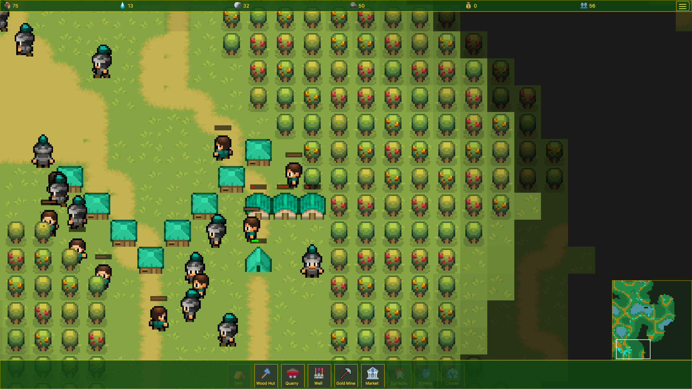
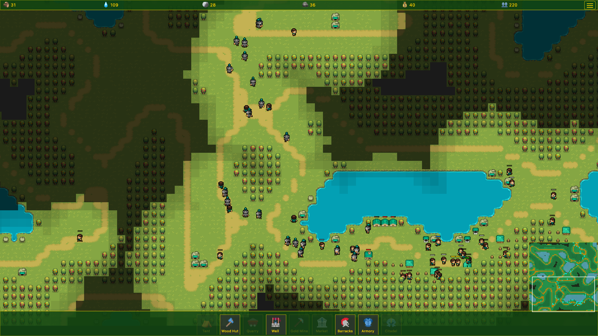
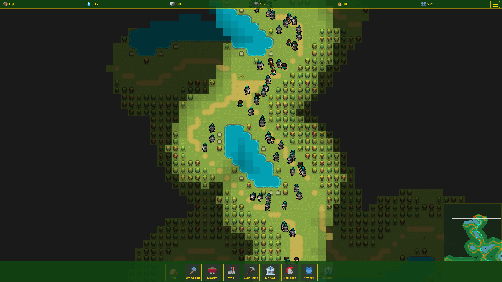

Pixel Fortress
Klug bauen. Kämpfen lassen.
100% Open Source Auto-Battler
Festungsbau • Automatisierte Strategie • Pixel Art
Kein Download nötig • Im Browser spielen • Vollständiger GPL v3 Quellcode
Klug bauen. Kämpfen lassen.
100% Open Source Auto-Battler
Festungsbau • Automatisierte Strategie • Pixel Art
Kein Download nötig • Im Browser spielen • Vollständiger GPL v3 Quellcode
Entwerfe deine Festung. Lass deine Einheiten den Rest machen.

Strategischer Festungsbau und Wegfindung für Einheiten

Erkundung riesiger prozedural generierter Karten mit großen Stützpunkten und Ressourcenverwaltung

Epische Schlachten mit zahlreichen Einheiten im automatisierten Kampf
Baue Sägewerke, Minen und Kasernen. Verwalte Ressourcen und erweitere deine Festung.
Setz deine Einheiten ein und lass sie kämpfen. Null Mikromanagement.
Klassik, One Shot und Turbo Gathering für unterschiedliche Spielweisen.
Kämpfe gegen bis zu 3 KI-Gegner mit einstellbarem Schwierigkeitsgrad (Einfach, Normal, Schwer).
Unendlich viele prozedural generierte Karten in 4 Größen.
Einheiten erkunden automatisch. Gebäudeplatzierung bestimmt die Entdeckung.
Holzfäller, Bergarbeiter, Soldaten, Bogenschützen, Magier — jeder mit einzigartigen Fähigkeiten.
Auto-zielende Türme, die Feinde abschießen. Halte Engpässe.
Upgrade Gebäude zu spezialisierten Varianten. Forme deine Strategie.
Vollständig animierte Umgebungen mit dynamischen visuellen Effekten.
Für immer
Einmaliger Kauf (geplant ~4,99 €)
💡 Der gesamte Quellcode ist Open Source. Die Steam-Version befindet sich in der Entwicklung und wird exklusive Inhalte und Steam-Integration bieten und die weitere Entwicklung finanzieren. Noch kein Erscheinungsdatum — bleibt dran!
Jede Codezeile ist unter der GPL v3 Lizenz öffentlich. Lerne davon, trage bei oder baue deine eigene Version.
Gesamte Spiellogik, Premium-Features und Systeme sind auf GitHub einsehbar. Nichts ist versteckt.
Beiträge willkommen! Füge Features hinzu, behebe Bugs, erstelle Karten oder verbessere die Dokumentation.
Lerne Spielentwicklung durch das Studium einer vollständigen Auto-Battler-Implementierung in Vanilla JavaScript mit PixiJS.
GPL v3 stellt sicher, dass abgeleitete Werke offen bleiben. Forke, ändere und teile frei.
Das Spiel wird für eine Steam-Veröffentlichung vorbereitet (kein Datum angekündigt). Es wird für Windows und Linux verfügbar sein.
Geplante Steam-Features:
Und last but not least: Die Steam-Version unterstützt den Entwickler! Dein Kauf finanziert direkt neue Features und Inhalte.
Sofort spielen, kein Download erforderlich. Funktioniert in jedem modernen Browser.
KostenlosVollständige Kampagne, exklusive Karten, Cloud-Spielstände und Errungenschaften.
DemnächstQuellcode ansehen, beitragen oder eigene Desktop-Version erstellen.
Open SourceKostenlose eigenständige Builds für Windows und Linux.
KostenlosDie kostenlose Version ist zu 100% kostenlos, für immer. Keine Anzeigen. Kein Pay-to-Win. Vollständiges Gameplay, unbegrenzte Zufallskarten, verschiedene Spielmodi. Spiele im Browser oder auf dem Desktop. Die Premium Steam-Version bietet zusätzliche Karten, exklusive Spielmodi, Cloud-Speicherung und Erfolge.
Die kostenlose Version enthält das komplette Spiel mit einer Auswahl vordefinierter Karten und lokalen Spielständen in Desktop-Apps. Die geplante Steam-Version fügt Cloud-Spielstände, Steam-Errungenschaften, umfangreiche Premium-Inhalte (Karten, Spielmodi, Kampagne) hinzu und hilft, die laufende Entwicklung zu finanzieren.
Technisch ja! Der Code ist 100% öffentlich. Du erhältst jedoch keine Steam-Features wie Cloud-Spielstände und Errungenschaften ohne die Steam-API. Die meisten Spieler bevorzugen den Komfort von Steam.
Forke das Repository auf GitHub, nimm deine Änderungen vor und reiche einen Pull Request ein. Siehe CONTRIBUTING.md für Richtlinien. Beiträge zu allen Features (einschließlich Premium) sind willkommen!
Ja! Das Spiel wird aktiv entwickelt. Die kostenlose Version erhält Core-Updates, Bugfixes und neue Features. Bei Veröffentlichung wird die Steam-Version umfangreiche Premium-Inhalte enthalten: Kampagnen, exklusive Karten, Spielmodi und kontinuierliche Updates.